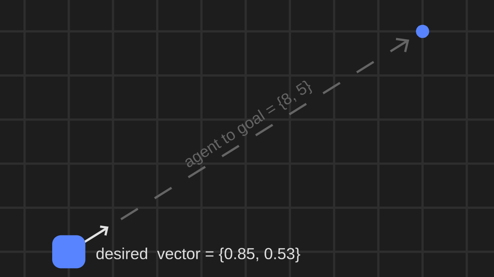
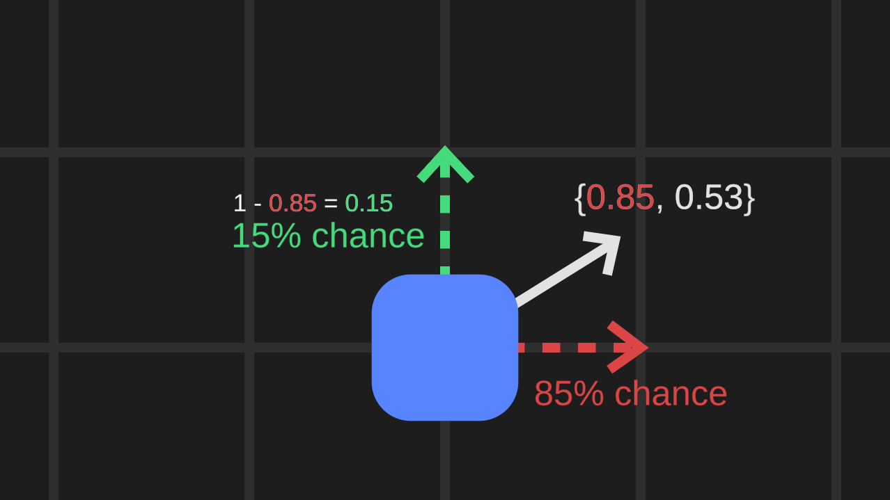
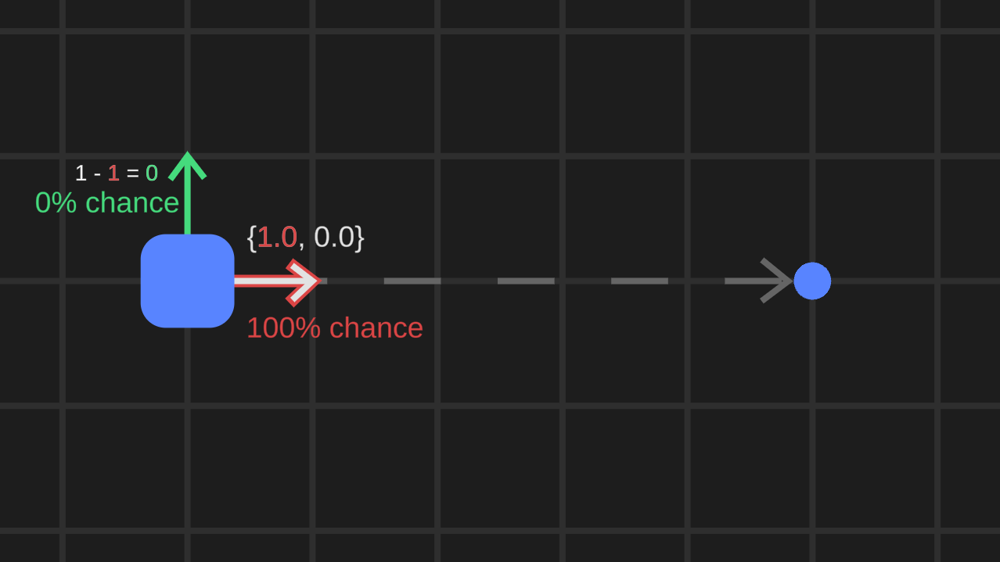

Dungeon of the Dragon
Dungeon of the Dragon is a tower defense game created in 3 days for the Ludum Dare game jam. You take on the role of a dungeon designer, laying traps in your dungeon to be triggered by automated agents attempting to steal your treasure hoard.
I needed a pathfinding algorithm that would ensure the agents always reached their goal without taking the same path every time. The strict time limit of the game jam necessitated an algorithm that was easy to implement and resilient to errors. The core concept of the algorithm is to treat an agent's desired vector as the odds that they follow the most direct path.

First, I use vector subtraction and normalization to find an agent's desired vector. The sign of each component in this desired vector will inform the agent which direction to move in, and the values of the components will determine how likely each potential move is to happen.
I then identify the larger component L in the desired vector and calculate the likelihood of each move. The chance of the agent moving along its most direct path is equal to L, and the chance of the less direct path is 1 - L.
By interpreting a normalized vector as the chance the agent will move in a given direction, the algorithm becomes resilient to the edge case in which there is only 1 valid move.
Interpreting the normalized vector in this way also means the smallest possible value of L is 1 divided by the square root of 2 (about 0.71), making the algorithm favor more straightforward paths. This works well for Dungeon of the Dragon because the player is placing traps for the agent to trigger. The algorithm creates a highly travelled path to place more effective traps, but gives agents a way to potentially circumnavigate these traps without the need for a complex understanding of their surroundings.